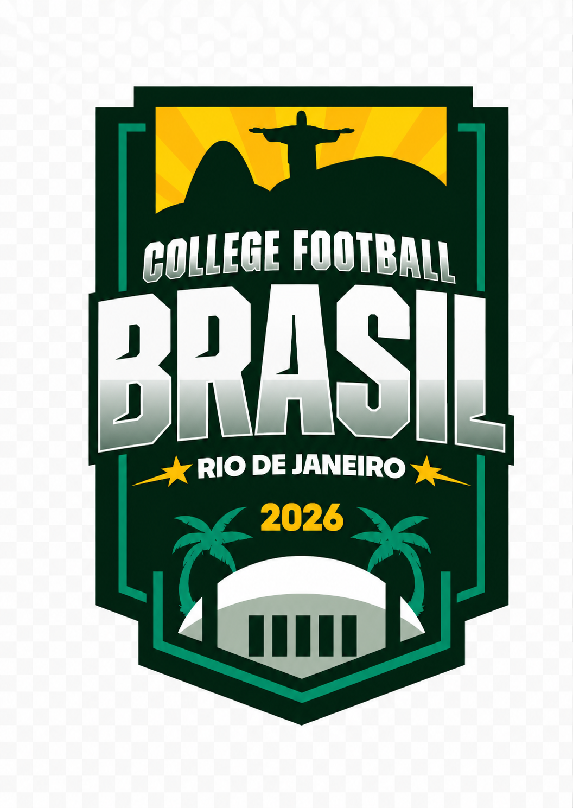

Comunicado
Oficial
Hoje recebemos a confirmação das universidades University of Virginia (UVA) e NC State University de que a partida originalmente prevista para acontecer no Brasil em 2026 será transferida para Charlottesville, Virginia (EUA).
Essa decisão ocorreu após a Athlete Advantage (AA) informar dificuldades para a realização do evento no Brasil e foi posteriormente confirmada pelas próprias instituições. Assim como milhares de torcedores e parceiros, fomos surpreendidos pela decisão e por sua comunicação.
Gostaríamos de agradecer sinceramente a todos os torcedores, parceiros, patrocinadores, fornecedores, atletas, treinadores, veículos de imprensa e membros da comunidade do futebol americano que acreditaram e apoiaram este projeto desde o primeiro dia.
Informamos também que todos os ingressos adquiridos serão integralmente reembolsados. Nos próximos dias divulgaremos as orientações e procedimentos oficiais para reembolso, após alinhamento operacional com a Ticketmaster.
Seguiremos trabalhando para que o College Football retorne ao Brasil ainda mais forte em 2027.
Obrigado por fazer parte desta história. 🇧🇷🏈
Perguntas Frequentes
Os ingressos serão reembolsados?
Sim. Todos os ingressos adquiridos para a partida originalmente prevista no Brasil serão integralmente reembolsados.
Preciso solicitar o reembolso agora?
Não neste momento. As orientações oficiais serão divulgadas nos próximos dias.
Como o reembolso será realizado?
O processo será conduzido através da Ticketmaster e dos meios de pagamento utilizados na compra.
Qual o prazo para receber o reembolso?
Os prazos serão informados após a definição do procedimento operacional com a Ticketmaster e demais parceiros.
Despesas de viagem e hospedagem serão reembolsadas?
Neste momento, o processo anunciado refere-se exclusivamente aos ingressos adquiridos para o evento.
Como acompanhar novas informações?
Todas as atualizações serão publicadas nos canais oficiais da College Football Brasil.